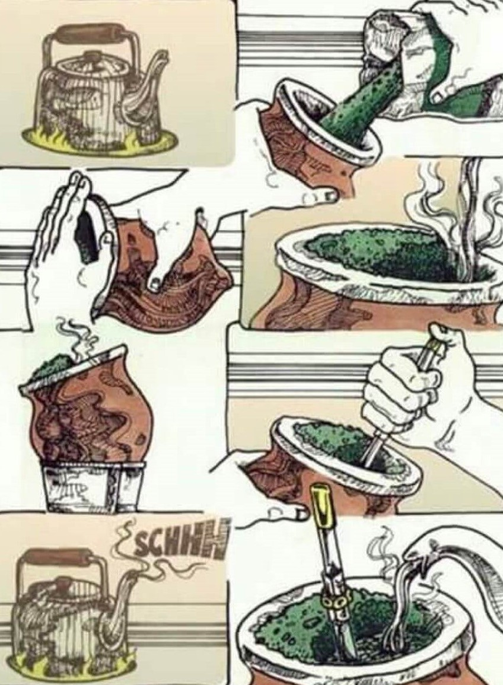

-Tips Materos-
¿Cómo curar tu mate de calabaza?
Colocar yerba húmeda fria dentro de la calabaza durante 24 horas. Luego retirar la yerba y raspar la calabaza con una cuchara para retirar el hollejo. El uso frecuente ayuda al proceso. No lavar con agua y secar con una servilleta después de cada uso.
¿Cómo curar tu mate de madera?
1- Untá hasta la boca del mate con aceite o manteca. TIP: La manteca le da más sabor a la madera
2- Llená a tope con yerba usada y andá humedeciendo durante el día, con pequeñas cantidades de agua. TIP: humedecé, no llenes de agua
3- Después de 24hs, retirá y enjuagá. TIP: si queda un poco de manteca no pasa nada, eso hace que se termine de sellar
¿Cómo cebar un buen mate?
PRIMERO: Llená con tu yerba favorita 3/4 partes del mate
SEGUNDO: Sacudi el mate tapando con la palma de la mano
TERCERO: Poné un chorrito de agua tibia en la zona con menos yerba
CUARTO: Tapá la bombilla y ponela en la parte mojada
QUINTO: A disfrutar la magia de tomar mate
TIP Importante: Calienta el agua evitando que hierva: para cebar un buen mate ES MUY IMPORTANTE que nunca supere la temperatura de 80°C
¿Cómo se cuida un mate?
Evitar que quede líquido dentro de la calabaza, para prevenir la formación de hongos, para ésto es necesario dejar 1 paño de servilleta dentro para que absorva la humedad
No dejar el mate con yerba usada más de 24 hs
No dejarlo secar boca abajo, menos cuando tiene un poco de líquido dentro, ya que éste caerá sobre la virola
Evitar mojar el cuero que recubre la calabaza y dejarlo al sol directo. Éstos dos provocan que se reseque y se agriete el cuero
Evitar golpes, para que la virola no se afloje y para que no se quiebre la calabaza
Recomendaciones
Limpiar la bombilla
Llena un recipiente con agua fría, luego agrega una cucharadita de bicarbonato de sodio, déjala en ebullición durante 10 minutos y listo, bombilla limpia. Repetí cada 15 días aproximadamente
Cuidado de virola
Para cebar el mate NO sobrepasar con agua el punto de contacto entre la virola y la calabaza, es decir, no llenarlo hasta el tope de agua. Ya que la virola cumple una función más estética que funcional